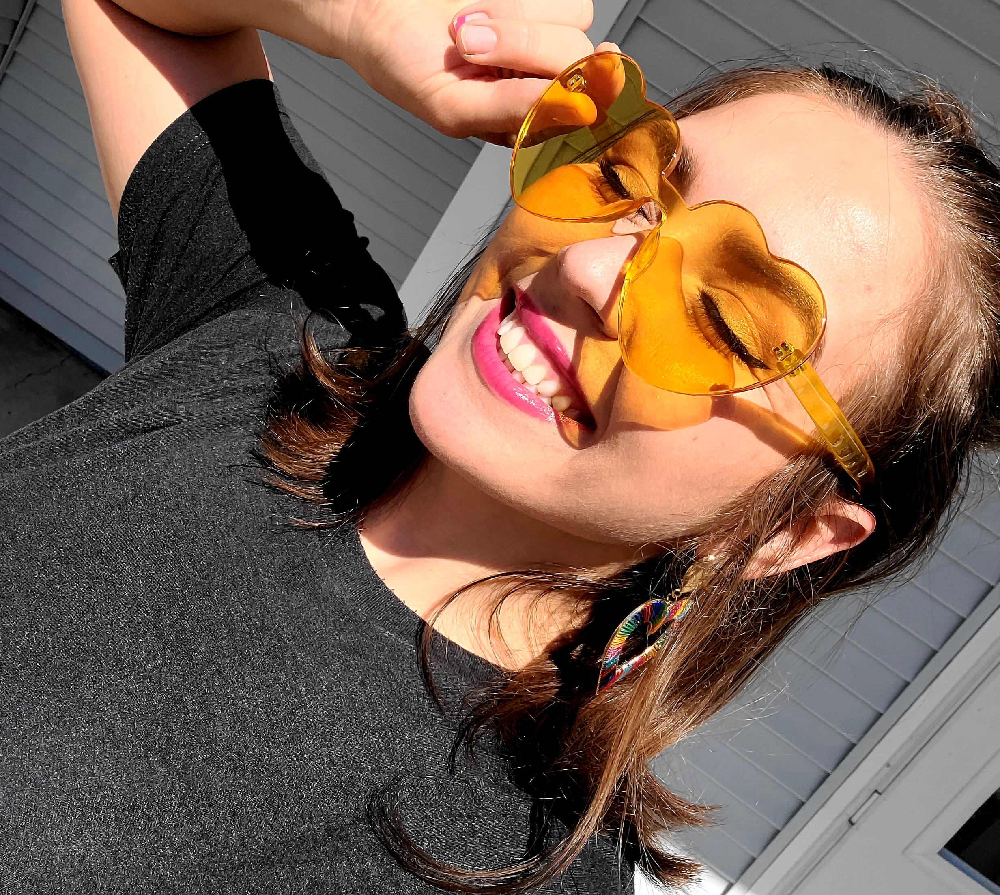

About
Me

My love for computers and technology started at a young age. I remember being five-years-old and helping my dad set up our brand new Windows 2000 and I was hooked! I learned what I could at a young age and continued on until middle school where my interests grew and this fascinating world was put on the back burner. After exploring college for awhile I entered the service industry where I was a bartender and manager for six years. These days I'm finally taking the time to learn all I can about computers and internet technologies.
Work
Community Canvas
place for users to share and view street art
Creative Corner
to inspire artists in a creative block
Tech Blog
fun blog for tech lovers
Weather Dashboard
for weather/forecast of city
Work Day Scheduler
color coded based on time